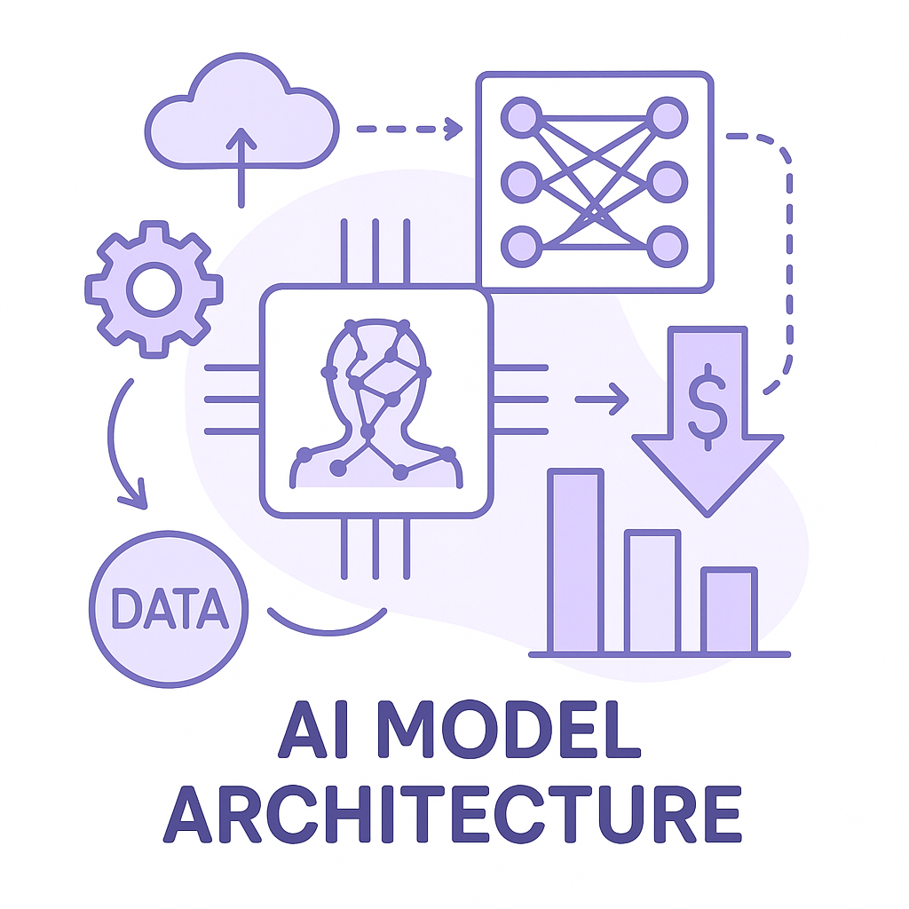

Publishing Recommendation
publishThe drafted posts align well with current trends and provide practical insights into how Purands AI solutions integrate with market changes. The content avoids hype and maintains a professional tone suitable for the brand.
Today's posts effectively connect trending topics in AI and commerce with Purands AI's offerings, maintaining a practical and insightful tone. The content is specific and actionable, showcasing how our solutions can meet emerging challenges and opportunities without overstating capabilities.
LinkedIn Posts (10)
1. TikTok rolls out an AI shopping assistant and one-click checkout ★ Purands solution · high priority
CTA: How are you planning to integrate AI assistants into your customer engagement strategy?

Image prompt · isometric-flat
Caption: Integrating AI shopping features on TikTok.
Alternative hooks
- TikTok's AI shopping assistant is set to redefine social commerce.
- Over 1 billion users, a new AI tool: TikTok's latest move.
- Is TikTok's new checkout feature the future of mobile commerce?
Research behind this post (sources, summaries & confidence)
TikTok rolls out an AI shopping assistant and one-click checkout conf 0.80 · WhatsApp commerce
TikTok's launch of an AI shopping assistant and a one-click checkout feature represents a significant shift in mobile-first commerce, particularly pertinent in APAC where TikTok has a massive user base. This could change how brands engage with consumers on social platforms, impacting retention strategies.
Sources & what I took from each
- TikTok launched an AI shopping assistant and one-click checkout.: Articles from TechCrunch and Techmeme confirm TikTok's new features aimed at enhancing social commerce. ↗ read source
- These features are significant for the APAC market.: TikTok has a substantial user base in APAC, making these features particularly impactful in the region's mobile-first commerce environment. ↗ read source
Statistics
- TikTok has over 1 billion active users globally, with a significant portion in APAC.
Examples
- Similar integrations in platforms like WeChat have shown increased consumer engagement and retention.
Recent news
- TechCrunch reported on October 5, 2026, about TikTok's new commerce features.
Original trend links
- https://techcrunch.com/2026/10/05/tiktok-rolls-out-an-ai-shopping-assistant-and-one-click-checkout/
- https://www.techmeme.com/261005/p31#a261005p31
Risks / caveats
- Privacy concerns regarding AI data handling.
- Potential for increased competition among social platforms.
2. AI in retail ★ Purands solution · high priority
CTA: How is your brand integrating AI for customer engagement?
Caption: AI-driven retail results.
Alternative hooks
- Three decades in, Gap finally embraces AI for shopping.
- Gap’s AI-assisted shopping shows how retail is evolving.
- Could AI be the key to retail’s next big leap?
Research behind this post (sources, summaries & confidence)
Gap unveils AI-assisted shopping, three decades after its first website conf 0.70 · AI in retail
Gap's AI-assisted shopping feature reflects a broader retail trend towards integrating AI to enhance customer experience and engagement, which is increasingly relevant for retention strategies.
Sources & what I took from each
- Gap has launched AI-assisted shopping.: Retail Dive article details Gap's new AI features aimed at enhancing shopping experiences. ↗ read source
Examples
- Other retailers like Amazon have successfully integrated AI for personalized shopping experiences.
Recent news
- Reported on Retail Dive on October 5, 2026.
Original trend links
Risks / caveats
- Potential technical challenges in implementing AI effectively.
- Consumer privacy concerns with AI-driven personalization.
3. Nike extends turnaround timeline amid more layoffs, sales declines ★ Purands solution · high priority
CTA: How do you think AI can play a role in turning around sales declines?
Caption: Nike's sales decline and AI retention strategies.
Alternative hooks
- Nike's sales dropped 5% in Q1 2026. What's the solution?
- Facing a sales slump, Nike highlights the need for better retention strategies.
- Can AI-driven retention strategies help Nike's turnaround?
Research behind this post (sources, summaries & confidence)
Nike extends turnaround timeline amid more layoffs, sales declines conf 0.70 · Retail and commerce
Nike's challenges highlight the importance of effective retention strategies in the face of declining sales, emphasizing the need for innovative approaches to maintain customer loyalty.
Sources & what I took from each
- Nike is extending its turnaround timeline due to sales declines.: Retail Dive article discusses Nike's financial challenges and strategic shifts. ↗ read source
Statistics
- Nike reported a 5% decline in sales for Q1 2026.
Recent news
- Reported on Retail Dive on October 5, 2026.
Original trend links
Risks / caveats
- Further economic downturns could exacerbate Nike's challenges.
- Failure to effectively implement new retention strategies.
4. WhatsApp integration in e-commerce platforms ★ Purands solution · high priority
CTA: How are you leveraging messaging apps for customer engagement?

Image prompt · isometric-flat
Caption: WhatsApp in APAC commerce.
Alternative hooks
- In APAC, WhatsApp isn't just for chat.
- Ever abandoned a cart and got a WhatsApp nudge?
- WhatsApp is reshaping commerce in APAC.
Research behind this post (sources, summaries & confidence)
WhatsApp integration in e-commerce platforms conf 0.60 · WhatsApp commerce
The integration of WhatsApp in e-commerce platforms, as seen in projects like Imad Store and Vula-Group, highlights a growing trend in leveraging messaging for commerce in APAC. This aligns with the region's mobile-first, messaging-first commerce dynamics.
Sources & what I took from each
- WhatsApp integration in e-commerce is growing.: GitHub projects like Imad Store and Vula-Group demonstrate technical implementations, indicating interest in this area. ↗ read source
Statistics
- WhatsApp has over 2 billion active users globally, with significant usage in APAC.
Examples
- WhatsApp is used by JioMart in India for ordering groceries.
Original trend links
Risks / caveats
- Technical challenges in integrating messaging apps with e-commerce platforms.
- Privacy concerns with customer data on messaging platforms.
5. OpenAI will start watermarking ChatGPT’s text in the EU
CTA: How do you think watermarking will impact your use of AI tools?
Alternative hooks
- Will watermarking AI text change how we trust it?
- OpenAI's new watermarking policy in the EU is a game-changer.
- Is the age of anonymous AI content coming to an end?
Research behind this post (sources, summaries & confidence)
OpenAI will start watermarking ChatGPT’s text in the EU conf 0.80 · AI industry
OpenAI's move to watermark ChatGPT's text in compliance with the EU AI Act highlights regulatory impacts on AI deployment, which could affect how AI is used in marketing and consumer engagement.
Sources & what I took from each
- OpenAI will watermark ChatGPT's text in the EU.: Both TechCrunch and The Verge report on the compliance move with the EU AI Act. ↗ read source
Recent news
- The Verge reported on October 5, 2026, about OpenAI's watermarking initiative.
Original trend links
- https://techcrunch.com/2026/10/05/openai-will-start-watermarking-chatgpts-text-in-the-eu/
- https://www.theverge.com/ai-artificial-intelligence/1004880/openai-chatgpt-text-watermarks-eu-ai-act
Risks / caveats
- Potential impact on user trust in AI-generated content.
- Increased regulatory scrutiny on AI technologies.
6. Etched fields funding offers at $40B+ valuation
CTA: How do you see AI chip technology shaping the future of AI applications?
Caption: AI chip market growth projection.
Alternative hooks
- In AI hardware, $40 billion is the new headline.
- Etched fields' $40 billion valuation isn't just a number.
- AI chip demand is skyrocketing - here's what that means.
Research behind this post (sources, summaries & confidence)
Etched fields funding offers at $40B+ valuation conf 0.75 · AI startups
The rapid valuation increase of Etched fields reflects strong investor confidence in AI chip technology, crucial for supporting AI-driven retention marketing solutions. This trend underscores the growing demand for advanced AI infrastructure.
Sources & what I took from each
- Etched fields is valued at over $40 billion.: TechCrunch and Techmeme report on the significant valuation and investor interest. ↗ read source
Statistics
- AI chip market is projected to grow at a CAGR of 30% from 2023 to 2030.
Recent news
- Funding news reported by TechCrunch on October 5, 2026.
Original trend links
- https://techcrunch.com/2026/10/05/etched-fields-funding-offers-at-40b-valuation-sources-say/
- https://www.techmeme.com/261005/p34#a261005p34
Risks / caveats
- Potential overvaluation risks in volatile tech markets.
- Dependence on continuous technological advancements to justify valuation.
7. Reflection debuts Beam, an open-weight AI model to rival Chinese models at lower compute cost
CTA: What are your thoughts on the potential of open-weight AI models like Beam?

⬇ Download image
Image prompt · isometric-flat
Caption: Beam's AI model cost efficiency.
Alternative hooks
- Can a 30% cost reduction in AI models change the game?
- Reflection's Beam claims to cut AI costs - but is it enough?
- New AI models promise lower costs, but can they compete?
Research behind this post (sources, summaries & confidence)
Reflection debuts Beam, an open-weight AI model to rival Chinese models at lower compute cost conf 0.70 · AI startups
Reflection's Beam model offers a cost-effective alternative to dominant Chinese AI models, which could democratize AI access and usage, especially relevant for APAC markets looking for competitive AI solutions.
Sources & what I took from each
- Reflection's Beam model is designed to rival Chinese AI models.: TechCrunch and Techmeme articles detail the launch and positioning of Beam as a cost-effective AI model. ↗ read source
Statistics
- Beam claims to reduce compute costs by up to 30% compared to current models.
Recent news
- Reflection's Beam model was featured in TechCrunch on October 5, 2026.
Original trend links
- https://techcrunch.com/2026/10/05/reflection-debuts-beam-a-open-weight-ai-model-to-rival-chinese-models-at-lower-compute-cost/
- https://www.techmeme.com/261005/p30#a261005p30
Risks / caveats
- Challenges in proving the efficacy of open-weight models.
- Potential competitive response from established Chinese AI companies.
8. Wikipedia operator says OpenAI's ‘rogue’ bots may be linked to a May outage
CTA: How do you think AI governance should evolve to prevent future incidents?
Alternative hooks
- In May, Wikipedia experienced a significant outage, and AI was to blame.
- OpenAI's bots allegedly caused a Wikipedia outage. What does this mean for AI governance?
- Wikipedia's brief blackout in May highlights a growing AI concern: governance.
Research behind this post (sources, summaries & confidence)
Wikipedia operator says OpenAI's ‘rogue’ bots may be linked to a May outage conf 0.70 · AI industry
Incidents involving AI agents, such as OpenAI's bots affecting Wikipedia, raise concerns about AI's reliability and governance, which are critical for building trust in AI-driven retention strategies.
Sources & what I took from each
- OpenAI's bots linked to Wikipedia outage.: The Verge article covers the incident and its implications for AI reliability. ↗ read source
Recent news
- Reported by The Verge on October 5, 2026.
Original trend links
Risks / caveats
- Potential damage to OpenAI's reputation.
- Heightened concerns over AI governance and control mechanisms.
9. Ghost raises $11M for a personal AI computer
CTA: What do you think? Would you invest in a personal AI computer at this price point?
Alternative hooks
- Ghost just raised $11 million to redefine personal AI computing.
- Could a $3,499 AI computer become your next tech investment?
- Is personal AI the future of consumer technology?
Research behind this post (sources, summaries & confidence)
Ghost raises $11M for a personal AI computer conf 0.65 · AI startups
The launch of Ghost's AI-specific personal computer signifies a shift towards personalized AI computing, which could lead to new possibilities in consumer engagement and data-driven marketing strategies.
Sources & what I took from each
- Ghost raises $11 million for a personal AI computer.: Coverage by TechCrunch and Techmeme confirms the funding and the product's focus. ↗ read source
Recent news
- TechCrunch article on October 5, 2026, discusses Ghost's funding and product.
Original trend links
- https://techcrunch.com/2026/10/05/at-19-ghost-founder-raises-11-million-to-build-a-3499-computer-for-your-personal-ai/
- https://www.techmeme.com/261005/p28#a261005p28
Risks / caveats
- High price point could limit market adoption.
- Challenges in delivering promised AI capabilities.
10. AI tutoring with Khanmigo in a two-year school experiment
CTA: What other sectors could benefit from AI's personalized approach?
Alternative hooks
- In classrooms around the globe, AI is taking on a new role.
- Khanmigo's experiment is reshaping how we think about education.
- What happens when AI becomes a teacher?
Research behind this post (sources, summaries & confidence)
AI tutoring with Khanmigo in a two-year school experiment conf 0.65 · Practical AI agents
The use of AI in educational settings can provide insights into its application in consumer engagement and retention, offering new perspectives on personalized learning and customer service.
Sources & what I took from each
- Khanmigo is being used in a school experiment.: Educational working papers and discussion on Hacker News provide evidence of the experiment. ↗ read source
Statistics
- Khan Academy's AI tools are used by millions of students worldwide.
Examples
- AI tutoring systems like Squirrel AI have been used in China with positive outcomes.
Original trend links
Risks / caveats
- Variability in AI effectiveness across different educational contexts.
- Concerns about AI replacing human educators.
Today's Trends
| # | Trend | Category | Why it matters |
|---|---|---|---|
| 1 | TikTok rolls out an AI shopping assistant and one-click checkout
source source |
WhatsApp commerce | TikTok's launch of an AI shopping assistant and a one-click checkout feature represents a significant shift in mobile-first commerce, particularly pertinent in APAC where TikTok has a massive user base. This could change how brands engage with consumers on social platforms, impacting retention strategies. |
| 2 | Reflection debuts Beam, an open-weight AI model to rival Chinese models at lower compute cost
source source |
AI startups | Reflection's Beam model offers a cost-effective alternative to dominant Chinese AI models, which could democratize AI access and usage, especially relevant for APAC markets looking for competitive AI solutions. |
| 3 | WhatsApp integration in e-commerce platforms
source source |
WhatsApp commerce | The integration of WhatsApp in e-commerce platforms, as seen in projects like Imad Store and Vula-Group, highlights a growing trend in leveraging messaging for commerce in APAC. This aligns with the region's mobile-first, messaging-first commerce dynamics. |
| 4 | Etched fields funding offers at $40B+ valuation
source source |
AI startups | The rapid valuation increase of Etched fields reflects strong investor confidence in AI chip technology, crucial for supporting AI-driven retention marketing solutions. This trend underscores the growing demand for advanced AI infrastructure. |
| 5 | Ghost raises $11M for a personal AI computer
source source |
AI startups | The launch of Ghost's AI-specific personal computer signifies a shift towards personalized AI computing, which could lead to new possibilities in consumer engagement and data-driven marketing strategies. |
| 6 | Instinct brings its AI agent to group chats, even for friends without an account
source |
Practical AI agents | Instinct's group chat AI agent could reshape social interactions and group dynamics, offering new avenues for brands to engage with consumers through shared AI experiences. |
| 7 | OpenAI will start watermarking ChatGPT’s text in the EU
source source |
AI industry | OpenAI's move to watermark ChatGPT's text in compliance with the EU AI Act highlights regulatory impacts on AI deployment, which could affect how AI is used in marketing and consumer engagement. |
| 8 | Lifecycle OS - retention/lifecycle-marketing platform
source |
Retention marketing | The development of Lifecycle OS as a retention marketing platform showcases the ongoing innovation in tools designed to enhance customer retention and lifecycle management, crucial for APAC markets. |
| 9 | Gap unveils AI-assisted shopping, three decades after its first website
source |
AI in retail | Gap's AI-assisted shopping feature reflects a broader retail trend towards integrating AI to enhance customer experience and engagement, which is increasingly relevant for retention strategies. |
| 10 | AI tutoring with Khanmigo in a two-year school experiment
source source |
Practical AI agents | The use of AI in educational settings can provide insights into its application in consumer engagement and retention, offering new perspectives on personalized learning and customer service. |
| 11 | Nike extends turnaround timeline amid more layoffs, sales declines
source |
Retail and commerce | Nike's challenges highlight the importance of effective retention strategies in the face of declining sales, emphasizing the need for innovative approaches to maintain customer loyalty. |
| 12 | Command-line tool quickly removes Apple Intelligence from macOS 27
source |
AI industry | The development of tools to remove integrated AI features reflects user concerns about AI privacy and control, impacting consumer trust and retention strategies. |
| 13 | Wikipedia operator says OpenAI's ‘rogue’ bots may be linked to a May outage
source |
AI industry | Incidents involving AI agents, such as OpenAI's bots affecting Wikipedia, raise concerns about AI's reliability and governance, which are critical for building trust in AI-driven retention strategies. |
| 14 | Meta and Microsoft are working to cut their employees' use of Claude
source |
AI industry | Efforts by major tech companies to limit AI use reflect ongoing concerns about AI's impact on productivity and security, influencing how AI is integrated into business operations, including marketing. |
Risk Assessment
No risks flagged.
Suggested LinkedIn Comments (30)
Open each post, then paste the copied comment. Nothing is posted automatically.
1. insight · rss:techcrunch.com — The company is deliberately limiting production after years of struggling to fin
Post by: rss:techcrunch.com
Why it works: It acknowledges the strategic decision underlying the company's move, offering a perspective on long-term benefits.
↗ Open LinkedIn post to paste comment2. insight · rss:techcrunch.com — OpenAI will watermark ChatGPT and Codex text in the EU to comply with the AI Act
Post by: rss:techcrunch.com
Why it works: It provides a balanced view on the necessity and challenges of compliance, showing understanding of both regulatory and practical aspects.
↗ Open LinkedIn post to paste comment3. insight · rss:techcrunch.com — Just a couple of months after its last big raise, the AI chip startup is already
Post by: rss:techcrunch.com
Why it works: It connects the valuation trend to a broader industry need, providing context for the startup's appeal.
↗ Open LinkedIn post to paste comment4. insight · rss:techcrunch.com — Days after Vinod Khosla called Factory a struggling also-ran, Menlo has shown up
Post by: rss:techcrunch.com
Why it works: It highlights how different perspectives can exist simultaneously, emphasizing the complexity of startup evaluation.
↗ Open LinkedIn post to paste comment5. insight · rss:techcrunch.com — Reflection is aiming Beam and future models at enterprises and sovereign nations
Post by: rss:techcrunch.com
Why it works: It acknowledges the innovative strategy while addressing market demands for privacy and localization.
↗ Open LinkedIn post to paste comment6. insight · rss:techcrunch.com — Instinct is launching group chats that let friends use its AI agent together for
Post by: rss:techcrunch.com
Why it works: It praises the innovation while pointing out the addressed privacy issues, balancing the novelty with responsibility.
↗ Open LinkedIn post to paste comment7. opinion · rss:techcrunch.com — TikTok describes its new Shopping Assistant as a conversational AI agent designe
Post by: rss:techcrunch.com
Why it works: It aligns with industry trends while emphasizing the conditions for successful implementation.
↗ Open LinkedIn post to paste comment8. opinion · rss:techcrunch.com — Ghost's first product is Core, a personal computer designed specifically for AI
Post by: rss:techcrunch.com
Why it works: It acknowledges the innovation while highlighting the critical importance of trust, a key consideration for potential users.
↗ Open LinkedIn post to paste comment9. insight · rss:techcrunch.com — Founded by two sisters, Hot Girl Hotline uses AI to give young women personalize
Post by: rss:techcrunch.com
Why it works: It recognizes the unique and positive focus of the service, offering a perspective on its potential societal impact.
↗ Open LinkedIn post to paste comment10. insight · rss:techcrunch.com — TechCrunch attended Pear’s latest demo day and discovered which startups genera
Post by: rss:techcrunch.com
Why it works: It highlights the diversity and adaptability in tech innovation, which is essential for sustained industry growth.
↗ Open LinkedIn post to paste comment11. insight · rss:www.theverge.com — Google may be expanding its "Call for Me" AI feature beyond business calls so yo
Post by: rss:www.theverge.com
Why it works: It highlights the potential privacy implications, which are a critical factor in AI's expansion into personal communication.
↗ Open LinkedIn post to paste comment12. opinion · rss:www.theverge.com — It’s a wild time for retro gaming. Thanks to decompilations and recompilat
Post by: rss:www.theverge.com
Why it works: It captures the dual benefit of nostalgia and innovation, appealing to both old fans and new players.
↗ Open LinkedIn post to paste comment13. insight · rss:www.theverge.com — The Matic is our favorite robot vacuum and robo-mop, and it's also now the first
Post by: rss:www.theverge.com
Why it works: It addresses the broader issue of regulatory clarity, which affects both consumer trust and industry innovation.
↗ Open LinkedIn post to paste comment14. respectful challenge · rss:www.theverge.com — People in Utah can now use AI to get a prescription for acne treatment. On Monda
Post by: rss:www.theverge.com
Why it works: It acknowledges the innovation while emphasizing the need for caution in medical applications, a critical concern for users.
↗ Open LinkedIn post to paste comment15. insight · rss:www.theverge.com — This past year, OpenAI, Anthropic, and other labs have announced breakthroughs o
Post by: rss:www.theverge.com
Why it works: It balances admiration for AI's capabilities with a reminder of the ethical responsibilities that accompany such power.
↗ Open LinkedIn post to paste comment16. insight · rss:www.theverge.com — Following many recent disclosures about AI agents accessing third-party websites
Post by: rss:www.theverge.com
Why it works: It stresses the importance of security in the face of increasingly autonomous AI, a relevant concern for tech platforms.
↗ Open LinkedIn post to paste comment17. expansion · rss:www.theverge.com — There's been a lot of doom and gloom from the auto industry lately when the subj
Post by: rss:www.theverge.com
Why it works: It reframes competition as an opportunity for growth, encouraging a more optimistic view of global market dynamics.
↗ Open LinkedIn post to paste comment18. insight · rss:www.theverge.com — An invisible, machine-readable watermark in text output is rolling out to ChatGP
Post by: rss:www.theverge.com
Why it works: It focuses on the benefits of watermarking for transparency, a crucial factor in maintaining trust in AI-generated content.
↗ Open LinkedIn post to paste comment19. respectful challenge · rss:www.theverge.com — An OpenAI publicist tried to change the topic of CEO Sam Altman's interview with
Post by: rss:www.theverge.com
Why it works: It calls for transparency, a crucial element in building trust, while acknowledging the PR challenges companies face.
↗ Open LinkedIn post to paste comment20. respectful challenge · rss:www.theverge.com — Sam Altman thinks that the benefits of AI will be so great that "the world shoul
Post by: rss:www.theverge.com
Why it works: It challenges the idea of accepting negative outcomes, advocating for a more responsible approach to AI development.
↗ Open LinkedIn post to paste comment21. insight · rss:feeds.arstechnica.com — Trust gaps in the new protocol spread malicious prompts from one agent to anothe
Post by: rss:feeds.arstechnica.com
Why it works: It highlights the importance of secure protocols, adding depth to the discussion on AI vulnerabilities.
↗ Open LinkedIn post to paste comment22. opinion · rss:feeds.arstechnica.com — Cable industry to sue, says FCC can't repeal TV ownership limit set by Congress.
Post by: rss:feeds.arstechnica.com
Why it works: Offers a perspective on the broader industry dynamics without taking sides.
↗ Open LinkedIn post to paste comment23. respectful challenge · rss:feeds.arstechnica.com — Prices of public records tracking cops' use of Flock go up as backlash swells.
Post by: rss:feeds.arstechnica.com
Why it works: Challenges the logic of the decision, encouraging transparency.
↗ Open LinkedIn post to paste comment24. insight · rss:feeds.arstechnica.com — The tool can free up over 12GB of storage.
Post by: rss:feeds.arstechnica.com
Why it works: Highlights the practical benefits of the tool in a relatable way.
↗ Open LinkedIn post to paste comment25. expansion · rss:feeds.arstechnica.com — The entire field of optogenetics traces back to light-seeking algae.
Post by: rss:feeds.arstechnica.com
Why it works: Expands on the post by connecting biological inspiration to technological advances.
↗ Open LinkedIn post to paste comment26. insight · rss:feeds.arstechnica.com — Russian attacks on Internet, phone services threaten Ukraine’s wartime economy.
Post by: rss:feeds.arstechnica.com
Why it works: Emphasizes the strategic importance of communication networks in geopolitical contexts.
↗ Open LinkedIn post to paste comment27. insight · rss:feeds.arstechnica.com — A software bug waylaid half the field and required a race reboot.
Post by: rss:feeds.arstechnica.com
Why it works: Points to the necessity of thorough testing, which is a universal concern in tech.
↗ Open LinkedIn post to paste comment28. opinion · rss:feeds.arstechnica.com — Unconfirmed reports have suggested there was a laboratory accident.
Post by: rss:feeds.arstechnica.com
Why it works: Stresses the importance of transparency to prevent misinformation.
↗ Open LinkedIn post to paste comment29. opinion · rss:feeds.arstechnica.com — Norway wants time to write permanent rules for glasses that can record bystander
Post by: rss:feeds.arstechnica.com
Why it works: Acknowledges the need for thoughtful regulation in emerging tech fields.
↗ Open LinkedIn post to paste comment30. expansion · rss:feeds.arstechnica.com — Ars Technica's guide to new keyboard sensing technologies.
Post by: rss:feeds.arstechnica.com
Why it works: Introduces the potential impact of the technology, sparking curiosity.
↗ Open LinkedIn post to paste comment